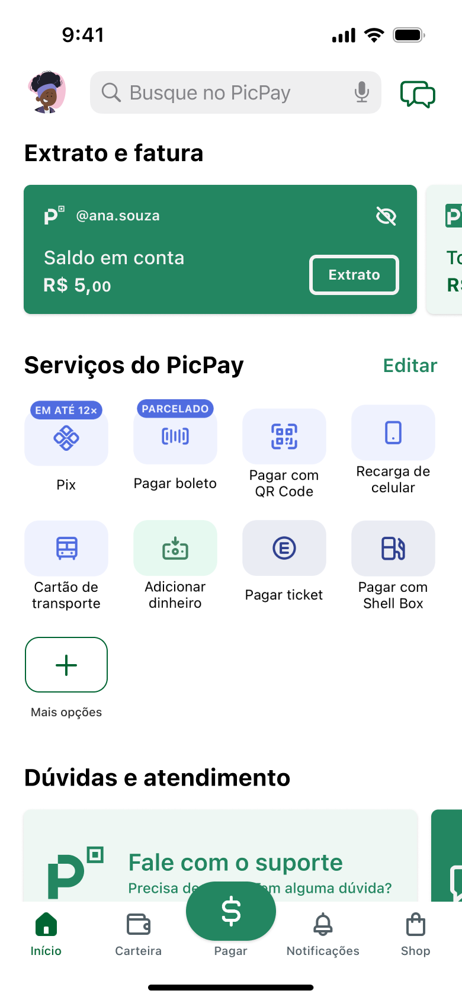

Os 8 serviços mais utilizados pelos usuários em destaque por padrão
Novo botão editar, para customizar a disposição dos serviços em acesso rápido

Banners contrastados permitem acesso rápido ao suporte, melhorando a navegação
A nova tela inicial se torna compatível com a WCAG 1.3.6 [AAA], ao permitir a customização do usuário, que agora pode diminuir a carga cognitiva da interface se desejar
Tela Inicial
Optei por manter a tela inicialmente com altura fixa, apresentando apenas os elementos essenciais para o uso do app.
A nova tela inicial se torna compatível com a WCAG 1.3.6 [AAA], ao permitir a customização do usuário, que agora pode diminuir a carga cognitiva da interface se desejar